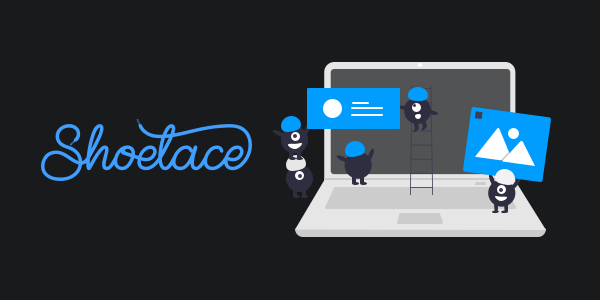

Shoelace 2.0: a forward-thinking library of web components
I've been having a lot of fun with Stencil and web components lately. Back in January, I decided to use it to completely redesign Shoelace, an open source project I created a few years ago.

I recently published Shoelace 2.0 — a collection of professionally-designed, accessible web components.
One really nice feature of web components is that you can use them with any framework. This is an amazing concept, especially for low-level building block components.
Let me explain why this is so amazing with an example.
Imagine you're on one of three teams in an organization, all tasked with building a different product. Team 1 wants to use React, Team 2 wants to use Vue, and Team 3 wants to use vanilla HTML+JS. The one requirement you have from your organization is that the UX must be consistent across all three products.
Obviously, sharing a library of UI components between the projects is the most efficient way to meet that requirement. But if you build your components in Framework A, you can't reuse them in Framework B or Framework C.
Web components solve this problem. They're supported by all modern browsers, they're framework-agnostic, and they're built into the standard, so we know they'll be supported for many years to come.
This is the technology that Shoelace is built on.
"But I only use [insert your favorite framework here]!" #
I hear you. You only use React/Vue/Angular/whatever, so why should you care if your components work in other frameworks?
The fact is, at some point your beloved framework will ship a new version with breaking changes, and when that happens, you'll be reworking every button, input, dialog, dropdown, tab group, etc. That's just how software works.
And further down the road, your framework of choice won't be as ubiquitous as it is today. Things change and, like it or not, you will eventually move on or get left behind.
Since Shoelace is built on standardized browser APIs, it will be around long after today's most popular frameworks become obsolete.
TL;DR #
I love building UI components, but it really sucks to rebuild them for every new framework (and new framework version). With Shoelace, I'm harnessing the power of web components to bring you a reusable, customizable component library that works with whatever framework you're using today and whatever framework you'll be using tomorrow.